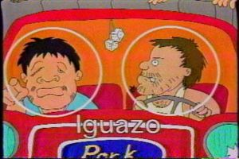

Iguazo
 De: La Frikipedia, la enciclopedia extremadamente seria.
De: La Frikipedia, la enciclopedia extremadamente seria.
| De la serie tribus urbanas del mundo:
|
| Iguazo
|
Ejemplo de la tribu
|
| He aquí un gran iguazo
|
|
| Hábitat
|
Bogotá y Medellín, Colombia
|
| Inteligencia
|
Solo para despinchar la buseta
|
| Frase favorita
|
¿Qué hay de comer?
|
| ¿Peligroso?
|
Cuando están borrachos, mucho
|
| Obsesión
|
Tomar cerveza, dormir, jugar tejo
|
| Notas
|
¡Póngale la Firma!
|
Los iguazos son una tribu urbana colombiana, caracterizada por su destacada presentación a la hora de currar, hablar, y otras actividades.
Aparición
Los iguazos existen desde la época de Alejandro Magno, Pero al pasar de los Años Fueron Desapareciendo. Hasta el Año 1992, Año en que empezaron las Eliminatorias para el Mundial de USA 94... De ay Re-Nace el Primer Iguazo, William Vinasco; El Cual se Dedicaba a Narrar las Desgracias de la Selección Colombiana en Sus Partidos.
El Señor Vinasco empezó a Salir en Televisión, Radio y Otros Medios. Desde ahí se Empezó a Expandir el Virus Llamado Iguazitis Aguda (Recién Descubierto en la Grasa que le Extrajeron a René Higuita en el CX) El Cual Transformaba a Su Victima en un Espécimen Raro y Borracho. Hoy en Día no Hay Cura para El Virus, Pero hay un Tratamiento.
Síntomas de la iguazitis
- Predisposición por la música popular
- subir mas de 15 kilos en una semana
- Crecimiento exagerado de bello y bigote
- Aparecimiento de cicatrices en la cara
El Tratamiento consiste en Someter al Paciente a cortarse el Bigote para asi Disminuir la Enfermedad y Llegar a una Posible Cura. En si, los Iguazos son Enfermos.
¿Que son los Iguazos? ¿Se comen?
Joder, No son Comida. Son Animales que se caracterizan por:
- Son Feos (Hasta en el Nombre)
- Huelen
a mierda mal
- Tienen Aliento de Perro
- La mayoría son camioneros
- Tienen Bigote de Albañil (Tipo Mario Bros)
- Arrechos por Excelencia
- Compran cds piratas en los semáforos
- No tienen billetera, cargan un fajo billetes para que crean que son ricos
- Y siempre andan mal vestidos
- Con camisas a cuadros
- Se meten la camisa en el pantalón
- No se bañan los Domingos
- Cuando comen pollo frito (o apanado) tienden a limpiarse la grasa en su ropa.
Clasificación
Se clasifican en 2 grupos grandes que a su vez tienen 2 ramificaciones:
- Los de cuanto pueblo colombiano hay (mayormente los que tienen paradas de camiones y fritanguerias en la carretera)dentro de los cuales se encuentran los camioneros (brutus pocholerus mustachae),y los iguazos de pueblo, que es el 80% de la población colombiana y que tiene gusto por el canal de música guisa Radiola tv
- Los de ciudad, que son los buseteros (una raza evolucionada de los camioneros),los taxistas y los iguazos de barrio.
Los iguazos y radiola tv
Radiola tv junto con eMoTV y hTV son los tres caballos del apocalypsis que planean destruir la juventud ya sea con emos las 24 horas del día o con buseteros cantando música de traquetos, radiola tv consiste en un canal de canciones guisas las 24 horas del día, donde cualquier iguanodonte u iguazo(requisito primordial) muestra sus vidioclips de música popular, que en su gran mayoría fueron grabados en una finca( exactamente en melgar) con una prostituta modelo mostrona que no sabe actuar,los fondos de estos vídeos no superan los 50.000 pesos, ya que los graban con el celular.
Otras Características
- Le gusta el vallenato y/o la música popular
- Su canal preferido es radiola tv
- Escucha la radio "Buenos Días, Vallenato", "Temprano es más bacano (en donde aparece don jediondo)", azuquita pal café o uno de corte similar
- No se pierde ni un solo programa de "Sábados Felices“
- Según los iguazos "La Onda Oxígeno", que pretende hacer sentir "joven" a todo el mundo es del Putas, bacano, es lo mejor
- Todos los domingos almuerza en casa de la suegrita adorada.
- Si al iguazo le sobra algo de dinero (algo difícil en estos días) no falta al concierto de Charlie Zaa,pipe bueno, Fulanito, Los Tri-o, Marbelle, Moisés y sus vallenatos, Los Diablitos, Darío Gómez, Jorge Cárdenas, etc... (Tio, Se puso bueno esto)
- El Iguazo llega cansado de trabajar, y prende su televisor para entretenerse. Y lo primero que se le ocurre ver es El Show de las Estrellas, Yo amo a Paquita Gallego, Sueños, Sin Límites (¿alguien se la cree?), etc.
- Los Domingos a la hora del almuerzo no falta la Fritanga bien grasosa, Aguardiente o Cerveza, y pa' bajar el almuerzo, ¡Diomedez Diaz a todo volumen.
- Los Iguazon les Enseñan a Ver Novelas a sus Hijos de 5 Años (¿se la creen?)
- Son cinta negra en cruceta asi que si te le enfrentas y el tiene una en la mano puedes quedar permanente mente deformado
Ubicación
Según fuentes fiables; En el Centro de Medellín
Aunque sean Animales, Los Iguazos Cambien Hablan por Teléfono
Frases
- "Que Golazo Tan Ijueputa"
- "Uy, Mamasita Rica"
- "Me lleva por quini por la puerta de atrás"
- "Deje de Joder, Chino Marica"
- "No Tengo plata mano"
- "¿Que hay de Almuerzo?"
- "¡Déntrese pa´ dentro"
- "Zzzzzzzz"
- "Gaseosear"
- "Asi es que se canta hijueputaaa"
- "¿Le echo un huevo en vez de sopa?"
- "vamos a picar donde magola"(almorzar)
- "esta barrrriiigota paga los servicios"
- "oiga manno..."
- "Ayudantiar"

Cerdo (Izquierda), fue el Rey de los Iguazos hasta el 2001 cuando William Vinasco le arrebato el reinado
El rey de la música popular... iguazo por exelencia
Iguazos Famosos
Dieta iguaza
La suculenta dieta consta de:
- Frijoles
- Corrientazo(el mas barato)
- "Fría"(cerveza aguila)
- chunchuyo y fritanga(intestino de gallina relleno de grasa)
- mazamorra
- aceite para motor
- y cualquier otro alimento con mas de medio kilo de manteca
Esta dieta esta prohibida en 80 países por su alto contenido de aceite para motor , uranio y manteca sin refinar ellos son capaces de soportar esta dieta debido a su buche u panza radioactiva y ademas por que no hay un hijueputa peso´para comprar algo mas saludable.
Que hacer y que no hacer con un iguazo
- bajo ningún motivo le digas iguazo a tu padre,tío abuelo, primo... ya que si llegara a ser iguazo acabaría contigo en 0.2 segundos
- no te burles de su música
- no cuestiones su estupidez
- no le cambies de canal
- no lo despiertes
- no le digas pobre
En caso de que cometas alguno de los pasos anteriores realiza el siguiente procedimiento:
1. Golpealo en la pelotas ,es lo único que los deja débiles
2. CORRE!! nada lo detendrá después no parara hasta verte muerto o lleno de sangre
3. Lávate muy bien con hipoclorito de sodio y después de un baño químico, quema tu ropa y pertenencias ya que pueden estar contaminadas gravemente con el virus de la "iguazitis".
4. Si te creció bigote es demasiado tarde , por eso carga una pistola para suicidarte en caso de que empiecen los síntomas
¿Como Encontrarlos?
 Encontarlos es Tan Fácil Como Ganar la LPF
En Las Ciudades Mas Animalizadas, Frecuentan Varios Sitios como:
- La Buseta
- El Camión
- Ferias
- Cantinas
- La Casa
- Los Baños
- La alcadía
- Tu casa
Sabias que
- Los ya envejecidos Martín de Francisco
hermano de la Mencha y Santiago Moure han dedicado más de treinta años de vida intelectual al estudio de los "Iguazos"
- William Vinasco intento dominar el mundo tratando de ser alcalde de Bogota?
- El bigote es lo que importa en un iguazo?
- Los iguazos provienen de México y Colombia ahora están en todos los países
- Los más recientes estudios econométricos calculan que la probabilidad de que encuentres aun Iguazo en una buseta, el transmilenio o tragando "Pelanga" con "Big Cola" es casi del 100%
- Son enemigos a morir del rock o como la llaman ellos música de "mariguaneros"
- Creen que la irreverencia tiene limites.
- Creen que las rancheras son música Chibchombiana.
- Los Iguazos son una enfermedad?
Enlaces Externos
| Tribus Urbanas
|
 Universales Universales
 Españolas Españolas
 Argentinas Argentinas
 Chilenas Chilenas
 Colombianas Colombianas
 Mexicanas Mexicanas
 Peruanas Peruanas
 Venezolanas Venezolanas
|
Autor(es):
- Alex2610
- Roms
- Khazike Khashondo
- Diegocon13
- Balastian
- Ultrageno
- Chan
- Cibercrank
- Luchox tube luchox
- Zelwy
Frikipedia 2005-2016, Licencia
GFDL 1.2 - Extraído por FrikiLeaks